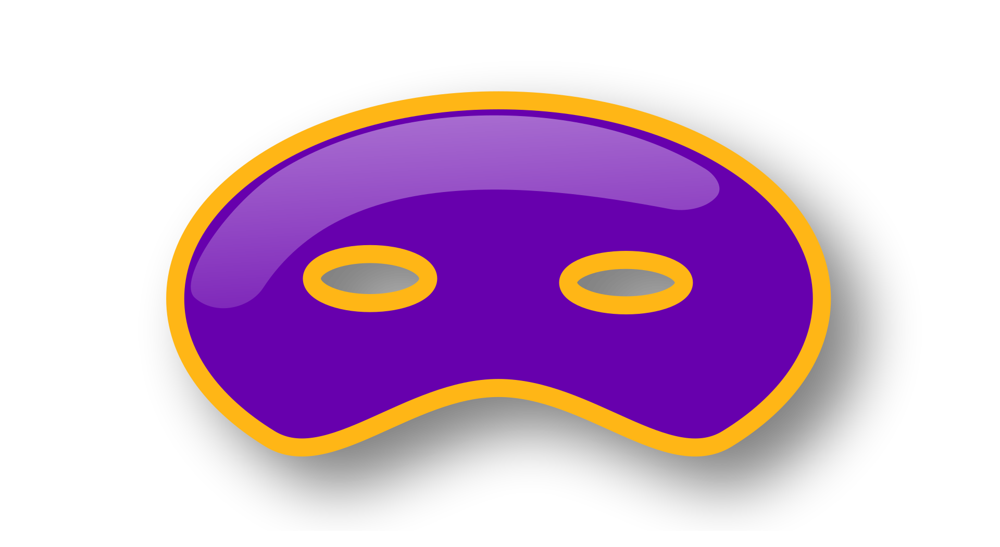
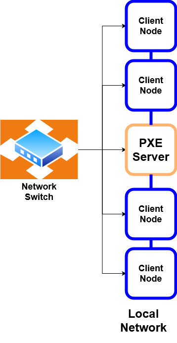

Introduction to PXE boot servers.
Introduction

What is a PXE boot server?
The term PXE stands for Preboot Execution Environment. This environment consists of a server which serves multiple clients. The server hosts software images, and the clients it serves are able to boot these images by retrieving them from the server via the network.
Essentially, this allows for the clients to boot over the network, instead of from physical media such as a CD-ROM or hard disk, provided they are PXE boot capable. This typically includes BIOS and UEFI PCs.
Groundwork
The PXE boot process relies on a lot of standard Internet protocols, and these include the following:
DHCP (Dynamic Host Configuration Protocol): A client-server based network management protocol used on IPv4 and IPv6 networks to automatically assign IP addresses to devices within the network, ensuring that no two devices share the same IP address.
TFTP (Trivial File Transfer Protocol): A simple client-server based file transfer protocol.
NFS (Network File System): NFS is a file sharing mechanism that allows users within a computer network to access files over the network in a manner similar to how local storage is accessed.
HTTP (Hypertext Transfer Protocol): In the PXE boot process, HTTP can be used by the PXE server to deliver OS images and other necessary files to the client machine over the network. Serving these files over HTTP can offer advantages such as higher transfer speeds and better reliability compared to TFTP.
The PXE server will serve the OS to it’s client node through a combination of these network protocols.
Network Architecture

The following are the tasks accomplished by a PXE server:
PXE Server Network Setup
The PXE server is typically located on the same local network as the clients it serves, usually through direct Ethernet connections to a network switch. This setup ensures a high-speed, low-latency connection between the server and the clients.
DHCP Request and IP Assignment
When a client initiates a PXE boot, it sends out a DHCP request to obtain an IP address and other network configuration details. The PXE server, which often also functions as a DHCP server or works in conjunction with one, responds to this request, assigning a local IP address to the client from a predefined range. This local IP address is part of the same subnet as the PXE server.
DHCP Reservation
This IP address can be hard-coded to the MAC address of a NIC (Network Interface Card), a process known as DHCP reservation. By configuring DHCP reservations, the PXE server assigns a specific IP address to each device based on its unique MAC address. This ensures that the same IP address is consistently assigned to a particular device each time it boots, leading to a static and predictable network configuration.
Customized Boot Images
Additionally, the PXE server can serve different images based on the MAC address of the NIC making the DHCP request. This allows for tailored deployment scenarios where different devices receive customized boot images or configurations. For example, workstations, servers, and other networked devices can each receive an appropriate OS image or boot configuration suited to their roles within the network.
Once the IP address is assigned, the PXE server can serve the necessary boot files to the client. This usually includes a network boot program (NBP) and an operating system image. The server may use TFTP for the initial stages of the boot process due to its simplicity and ease of implementation. However, for larger files, more efficient protocols like HTTP or NFS can be used to improve transfer speeds and reliability.
This local network setup allows the PXE server to handle multiple client requests simultaneously, while also managing IP address allocation. It also simplifies network management, as all devices are within the same local network, reducing the complexity associated with routing and firewall configurations that might be required if the PXE server and clients were on different networks.